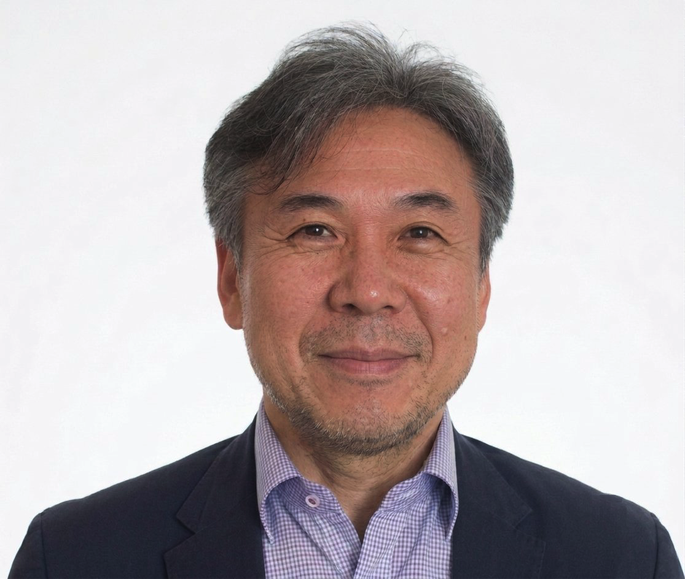

2003년 한국진공학회와 인연을 맺은 이후, 편집위원장부터 부회장까지 학회 운영의 전 영역을 거쳤습니다. 그 경험을 바탕으로 AI·양자기술·우주산업 시대를 이끄는 진공학회를 만들겠습니다.

한국진공학회는 1991년 창립 이래 34년이라는 긴 세월 동안 회원 여러분의 헌신과 열정으로 국내 진공과학 및 진공산업을 이끌어 온 명실상부한 핵심 학술단체로 성장하였습니다.
저는 2003년 한국진공학회와 인연을 맺은 이후 학회 운영의 전 영역을 두루 경험하였습니다. 이러한 경험과 회원 여러분에 대한 깊은 감사한 마음을 바탕으로, 이제 그 보답을 드리고자 제19대 한국진공학회 회장 후보로 출마하게 되었습니다.
회원 여러분께서 저에게 회장의 소임을 맡겨 주신다면, 선배 회원님들이 쌓아 오신 소중한 유산을 굳건히 계승하면서도 AI·양자기술·우주산업이라는 새로운 물결 속에서 한국진공학회가 시대를 선도하는 학회로 도약할 수 있도록 핵심 과제를 회원 여러분과 함께 반드시 실현하겠습니다.
22년간 학회 운영의 전 영역에서 쌓아온 경험을 바탕으로, 회원과 산업이 함께 성장하는 학회를 만들겠습니다.
하계·동계 정기학술대회를 내실 있게 운영하고, 분과별 특화 심포지엄과 워크숍을 확대합니다.
미국·일본·중국·대만 진공학회와의 교류 전통을 이어가며 학회의 국제적 위상을 높입니다.
역대 집행부가 구축한 산학연 협력 기반을 계승·발전시켜 실질적인 협력 체계를 강화합니다.
성명 김용민 · 1963년 2월 26일생 · 단국대학교 과학기술대학 물리학과 교수
Department of Physics, Ph.D.
이학석사
이학사 (1982.10–1985.05 군복무)
Postdoctoral Research Fellow
연구교수, Quantum-Functional Semiconductor Research Center
조교수 → 부교수 → 교수
방문연구원
방문교수 (2011–12 / 2017 / 2022)
IUVSTA Executive Committee Member (alternative)
Organizing Committee / Organizing Chair / Advisory Committee
존경하는 한국진공학회 회원 여러분!
한국진공학회는 1991년 창립 이래 34년이라는 긴 세월 동안 회원 여러분의 헌신과 열정으로 국내 진공과학 및 진공산업을 이끌어 온 명실상부한 핵심 학술단체로 성장하였습니다.
저는 2003년 한국진공학회와 인연을 맺은 이후 학회 운영의 전 영역을 두루 경험하였습니다. 이러한 경험과 회원 여러분에 대한 깊은 감사한 마음을 바탕으로, 이제 그 보답을 드리고자 제19대 한국진공학회 회장 후보로 출마하게 되었습니다. 만약 회원 여러분께서 저에게 회장의 소임을 맡겨 주신다면, 선배 회원님들이 쌓아 오신 소중한 유산을 굳건히 계승하면서도 AI·양자기술·우주산업이라는 새로운 물결 속에서 한국진공학회가 시대를 선도하는 학회로 도약할 수 있도록 다음의 세 가지 핵심 과제를 회원 여러분과 함께 반드시 실현하겠습니다.
학회의 가장 근본적인 사명은 회원들의 연구와 학술 활동을 적극적으로 지원하는 것입니다. 하계·동계 정기학술대회를 더욱 내실 있게 운영하고, 분과별 특화 심포지엄과 워크숍을 확대하여 신진 연구자들이 활발히 교류할 수 있는 장을 마련하겠습니다. 이를 위하여 청년 연구자 지원 강화: 대학원생·신진 교수를 위한 멘토링 프로그램 및 우수논문 발표 지원을 확대하여 차세대 진공과학 인재 양성에 힘쓰겠습니다. 또한 학술교류의 마당인 학술지 ASCT의 SCIE 진입을 위한 체계적인 로드맵을 수립하고, 편집 역량 강화와 우수 논문 유치에 집중 투자하겠습니다.
미국·일본·중국·대만 진공학회와의 교류 전통을 이어가면서, 우리 학회의 국제적 위상을 한 단계 더 높이겠습니다. 이를 위하여 진공학회에서 주관하는 IFFM, ICMAP 국제학술대회와 KVS 정기 학술대회 공동 개최를 더욱 발전시켜 KVS를 아시아 진공과학의 허브로 만들겠습니다. 또한 국제진공과학기술응용연합(IUVSTA)과의 공동 프로젝트를 확대하고, AI·우주기술(ST) 분야를 새로운 국제 협력 의제로 발굴하여 학회의 외연을 넓혀, 국내 개최가 확정된 ICTF21(2029년), IVC-25(2031년)의 성공적 개최를 위한 초석을 마련하겠습니다.
한국진공학회는 진공 산업과 함께 성장해 온 학회입니다. 그 강점을 살려 산·학·연이 함께 성장할 수 있는 실질적인 협력 체계를 구축하고 강화하겠습니다. 이를 위하여 역대 집행부에서 구축한 산학연 협력 기반을 계승·발전시켜, 기업이 필요로 하는 기술과 학·연의 연구 성과를 연결하는 상시 온라인 매칭 시스템을 운영하겠습니다. 또한 한국진공기술연구조합과의 긴밀한 협력을 토대로, 산업체가 직접 참여하는 특별 기술 세션과 채용 연계 프로그램을 신설하겠습니다.
한국진공학회가 걸어온 34년의 역사는 회원 여러분 한 분 한 분이 써 내려간 자랑스러운 기록입니다. 저는 그 기록 위에서 새로운 도약의 장을 열어가겠습니다. 부족한 저를 믿고 지지해 주신다면, 회원 여러분과 함께 뛰고 소통하며 한국진공학회가 세계 속에서 더욱 빛날 수 있도록 모든 역량을 다해 헌신하겠습니다.
제19대 한국진공학회 회장 후보 김 용 민